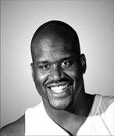

Shaquille O'NEAL
Shaquille Rashaun O'Neal (born March 6, 1972) is an American former professional basketball player who is a sports analyst on the television program Inside the NBA. O'Neal is regarded as one of the greatest basketball players and centers of all time. He was a 7-foot-1-inch (2.16 m) and 325-pound (147 kg) center who played for six teams over his 19-year career in the National Basketball Association (NBA) and is a four-time NBA champion. After playing college basketball for the LSU Tigers, O'Neal was drafted by the Orlando Magic with the first overall pick in the 1992 NBA draft. He quickly became one of the best centers in the league, winning Rookie of the Year in 1992–93 and leading his team to the 1995 NBA Finals. After four years with the Magic, O'Neal signed as a free agent with the Los Angeles Lakers. They won three consecutive championships in 2000, 2001, and 2002. Amid tension between O'Neal and Kobe Bryant, O'Neal was traded to the Miami Heat in 2004, and his fourth NBA championship followed in 2006. Midway through the 2007–2008 season he was traded to the Phoenix Suns. After a season-and-a-half with the Suns, O'Neal was traded to the Cleveland Cavaliers in the 2009–10 season. O'Neal played for the Boston Celtics in the 2010–11 season before retiring. O'Neal's individual accolades include the 1999–2000 Most Valuable Player (MVP) Award, the 1992–93 NBA Rookie of the Year award, 15 All-Star Game selections, three All-Star Game MVP awards, three Finals MVP awards, two scoring titles, 14 All-NBA team selections, and three NBA All-Defensive Team selections. He is one of only three players to win NBA MVP, All-Star Game MVP and Finals MVP awards in the same year (2000); the other players are Willis Reed in 1970 and Michael Jordan in 1996 and 1998. He ranks 8th all-time in points scored, 6th in field goals, 15th in rebounds, and 8th in blocks. Due to his ability to dunk the basketball and score from close range, O'Neal also ranks third all-time in field goal percentage (58.2%).O'Neal was elected into the Naismith Memorial Basketball Hall of Fame in 2016. He was elected to the FIBA Hall of Fame in 2017.